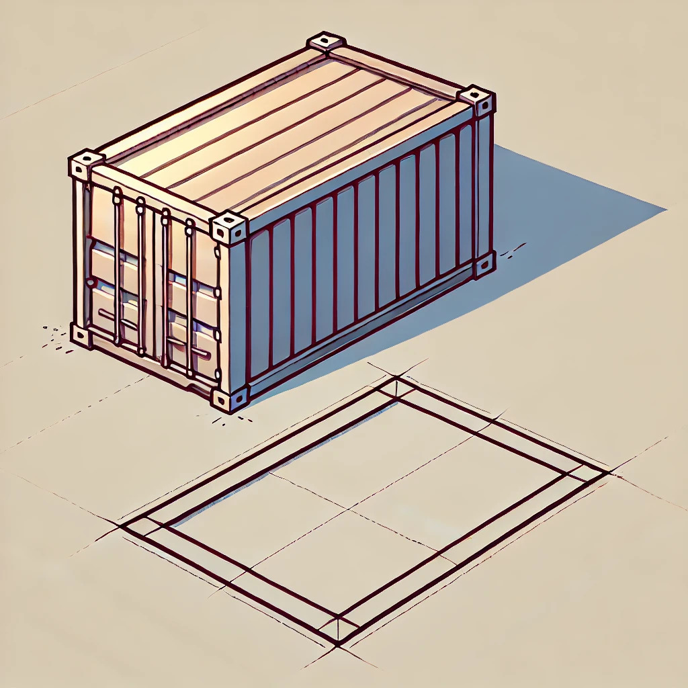

48th ICPC World Championship · Problem E
A large, cuboid-shaped shipping container has been delivered to your shipping yard. Before you can open it up, you first need to move the container to a different location in your yard.

Normally, you would simply lift up the container using a crane and drop it in its target location. Unfortunately, your crane is broken, and the only way for you to move the container is by carefully flipping the container over one of its bottom four edges, resulting in a 90-degree rotation around the axis running along that edge. Your hope is that you will eventually be able to reach the target location by repeating this action enough times.
Just how many times will you need to perform this flip operation to get the container to the right spot? Note that the orientation of the container changes as you move it across the yard, but in the end it needs to be in the same orientation as at the start. Two orientations are considered the same when they have the same length along each of the three axes of the coordinate system. The three side lengths of the container are distinct.
The first line contains three distinct integers a, b and c (1 ≤ a, b, c ≤ 1 000), the dimensions of the container in meters. In the initial orientation of the container, the sides of length a run in east-west direction, the sides of length b run in north-south direction, and the sides of length c run in up-down direction.
The second line contains two integers x and y (−1018 ≤ x, y ≤ 1018) giving the target location of the container. The container needs to be moved by x meters in the east-west direction and by y meters in the north-south direction (positive numbers indicate moving to the east/north, negative numbers indicate west/south).
Output the least number of times the container needs to be flipped to reach its target location. If it is not possible to reach the target location, output impossible.
3 4 5 8 0
2
3 4 5 -8 9
4
3 4 5 123 45
40
20 10 30 13 37
impossible